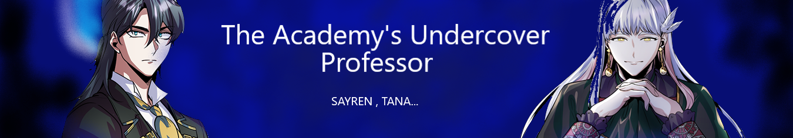

<DOCTYPE!html>
<html>
    <head>
        <link rel="stylesheet" href="tgy.css">
    </head>
    <body style="background-color:rgb(12, 12, 12);font-family: candara">
        <br>
        <br>
        <br>
          
    </body>
    <body>
        <br>
        <br>
    <div id="box">
    <a href="ta1.pdf">
        <button class="button" style="vertical-align:middle; float:left"><span>First episode </span></button>
    </a>
    
    <a href="ta2.pdf">
        <button class="button" style="vertical-align:middle; float: left;"><span>Second episode </span></button>
    </a>
    
    <a href="ta3.pdf">
        <button class="button" style="vertical-align:middle;float: left; "><span>Third episode </span></button>
    </a>
    
    
    <br>

</div>

    <div id="element2">
        <h2 style="color:rgb(192, 187, 180)"><br>Author:</b><span style="color:grey ;">  Sayren/WAG</span> </h2>
        <h3 style="color:green"> 168,524</h3>
        <h2 style="color:rgb(192,187,180)"><b>Description:</b></h2>
        <h2 style="color:grey">Machiavelli and Gerrard are just one of the many names the new professor of Ceoren Academy uses to disguise his identity, and now he can add one more to his list, Professor Ludger Cherish.  </h2>
        
    </div>

        </body>
</html>